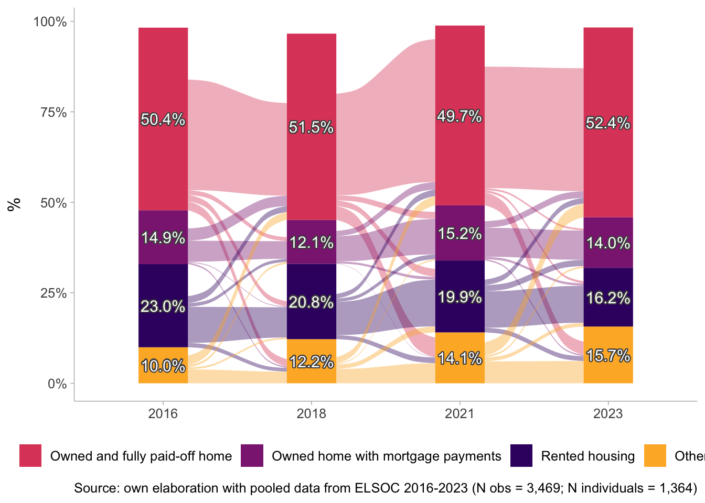
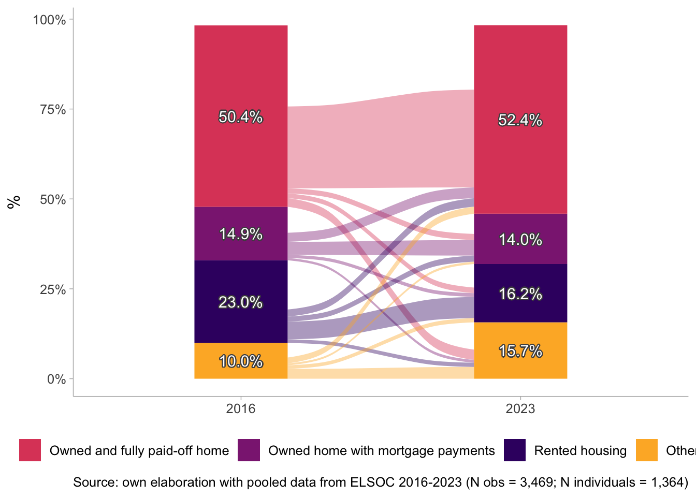

1 Presentation
This is the data preparation code for the paper “Housing wealth and social cohesion: Evidence from Chile”. The prepared dataset is ELSOC_Long_2016_2023_1.00.RData and other georeferenced data sources on housing values.
2 Libraries
3 Data
4 Processing
# General NA's
elsoc_long_2016_2023[elsoc_long_2016_2023 ==-999] <- NA
elsoc_long_2016_2023[elsoc_long_2016_2023 ==-888] <- NA
elsoc_long_2016_2023[elsoc_long_2016_2023 ==-777] <- NA
elsoc_long_2016_2023[elsoc_long_2016_2023 ==-666] <- NA4.1 Select
db <- elsoc_long_2016_2023 %>%
select(idencuesta,
ola,
tipo_atricion,
muestra,
segmento,
estrato,
ponderador_long_total,
ponderador01,
ponderador02,
comuna,
comuna_cod,
region,
region_cod,
m0_sexo,
m0_edad,
m01,
nhogar1,
m46_nhogar,
m54,
m30,
m30b,
m29,
m33
) %>%
as_tibble() 4.2 Filter
db <- db %>%
filter(region_cod == 13) # keep only region metropolitana4.3 Recode and transform
4.3.1 Wave
frq(db$ola)Identificador de ola de encuesta (x) <numeric>
# total N=6091 valid N=6091 mean=3.89 sd=1.95
Value | Label | N | Raw % | Valid % | Cum. %
-----------------------------------------------
1 | 2016 | 914 | 15.01 | 15.01 | 15.01
2 | 2017 | 762 | 12.51 | 12.51 | 27.52
3 | 2018 | 1090 | 17.90 | 17.90 | 45.41
4 | 2019 | 985 | 16.17 | 16.17 | 61.58
5 | 2021 | 775 | 12.72 | 12.72 | 74.31
6 | 2022 | 800 | 13.13 | 13.13 | 87.44
7 | 2023 | 765 | 12.56 | 12.56 | 100.00
<NA> | <NA> | 0 | 0.00 | <NA> | <NA>4.3.2 Sex
frq(db$m0_sexo)Sexo del entrevistado (x) <numeric>
# total N=6091 valid N=6091 mean=1.63 sd=0.48
Value | Label | N | Raw % | Valid % | Cum. %
------------------------------------------------
1 | Hombre | 2255 | 37.02 | 37.02 | 37.02
2 | Mujer | 3836 | 62.98 | 62.98 | 100.00
<NA> | <NA> | 0 | 0.00 | <NA> | <NA>db$sex <- car::recode(db$m0_sexo,
recodes = c("1='Male'; 2='Female'"),
levels = c("Male", "Female"),
as.factor = T)
db$sex <- sjlabelled::set_label(db$sex, label = "Sex")
frq(db$sex)Sex (x) <categorical>
# total N=6091 valid N=6091 mean=1.63 sd=0.48
Value | N | Raw % | Valid % | Cum. %
----------------------------------------
Male | 2255 | 37.02 | 37.02 | 37.02
Female | 3836 | 62.98 | 62.98 | 100.00
<NA> | 0 | 0.00 | <NA> | <NA>4.3.3 Age
frq(db$m0_edad)Edad del entrevistado (x) <numeric>
# total N=6091 valid N=6091 mean=47.95 sd=15.39
Value | N | Raw % | Valid % | Cum. %
--------------------------------------
18 | 15 | 0.25 | 0.25 | 0.25
19 | 26 | 0.43 | 0.43 | 0.67
20 | 39 | 0.64 | 0.64 | 1.31
21 | 63 | 1.03 | 1.03 | 2.35
22 | 72 | 1.18 | 1.18 | 3.53
23 | 70 | 1.15 | 1.15 | 4.68
24 | 87 | 1.43 | 1.43 | 6.11
25 | 102 | 1.67 | 1.67 | 7.78
26 | 91 | 1.49 | 1.49 | 9.28
27 | 98 | 1.61 | 1.61 | 10.88
28 | 99 | 1.63 | 1.63 | 12.51
29 | 89 | 1.46 | 1.46 | 13.97
30 | 126 | 2.07 | 2.07 | 16.04
31 | 107 | 1.76 | 1.76 | 17.80
32 | 125 | 2.05 | 2.05 | 19.85
33 | 126 | 2.07 | 2.07 | 21.92
34 | 122 | 2.00 | 2.00 | 23.92
35 | 115 | 1.89 | 1.89 | 25.81
36 | 138 | 2.27 | 2.27 | 28.07
37 | 116 | 1.90 | 1.90 | 29.98
38 | 128 | 2.10 | 2.10 | 32.08
39 | 105 | 1.72 | 1.72 | 33.80
40 | 123 | 2.02 | 2.02 | 35.82
41 | 105 | 1.72 | 1.72 | 37.55
42 | 109 | 1.79 | 1.79 | 39.34
43 | 93 | 1.53 | 1.53 | 40.86
44 | 115 | 1.89 | 1.89 | 42.75
45 | 105 | 1.72 | 1.72 | 44.48
46 | 115 | 1.89 | 1.89 | 46.36
47 | 118 | 1.94 | 1.94 | 48.30
48 | 130 | 2.13 | 2.13 | 50.44
49 | 113 | 1.86 | 1.86 | 52.29
50 | 122 | 2.00 | 2.00 | 54.29
51 | 111 | 1.82 | 1.82 | 56.12
52 | 132 | 2.17 | 2.17 | 58.28
53 | 121 | 1.99 | 1.99 | 60.27
54 | 122 | 2.00 | 2.00 | 62.27
55 | 146 | 2.40 | 2.40 | 64.67
56 | 142 | 2.33 | 2.33 | 67.00
57 | 139 | 2.28 | 2.28 | 69.28
58 | 150 | 2.46 | 2.46 | 71.75
59 | 149 | 2.45 | 2.45 | 74.19
60 | 138 | 2.27 | 2.27 | 76.46
61 | 114 | 1.87 | 1.87 | 78.33
62 | 111 | 1.82 | 1.82 | 80.15
63 | 124 | 2.04 | 2.04 | 82.19
64 | 107 | 1.76 | 1.76 | 83.94
65 | 105 | 1.72 | 1.72 | 85.67
66 | 98 | 1.61 | 1.61 | 87.28
67 | 97 | 1.59 | 1.59 | 88.87
68 | 63 | 1.03 | 1.03 | 89.90
69 | 65 | 1.07 | 1.07 | 90.97
70 | 74 | 1.21 | 1.21 | 92.19
71 | 75 | 1.23 | 1.23 | 93.42
72 | 60 | 0.99 | 0.99 | 94.40
73 | 55 | 0.90 | 0.90 | 95.30
74 | 59 | 0.97 | 0.97 | 96.27
75 | 57 | 0.94 | 0.94 | 97.21
76 | 44 | 0.72 | 0.72 | 97.93
77 | 39 | 0.64 | 0.64 | 98.57
78 | 20 | 0.33 | 0.33 | 98.90
79 | 24 | 0.39 | 0.39 | 99.29
80 | 17 | 0.28 | 0.28 | 99.57
81 | 11 | 0.18 | 0.18 | 99.75
82 | 6 | 0.10 | 0.10 | 99.85
83 | 3 | 0.05 | 0.05 | 99.90
84 | 3 | 0.05 | 0.05 | 99.95
85 | 1 | 0.02 | 0.02 | 99.97
86 | 1 | 0.02 | 0.02 | 99.98
90 | 1 | 0.02 | 0.02 | 100.00
<NA> | 0 | 0.00 | <NA> | <NA>db$age <- as.numeric(db$m0_edad)
db$age_t <- factor(car::recode(db$age,
"18:29=1;30:49=2;50:64=3;65:150=4"),
labels = c('18-29', '30-49', '50-64', '65 or more'))
db$age <- sjlabelled::set_label(db$age,
label = c("Age"))
db$age_t <- sjlabelled::set_label(db$age_t,
label = c("Age groups"))
frq(db$age_t)Age groups (x) <categorical>
# total N=6091 valid N=6091 mean=2.50 sd=0.92
Value | N | Raw % | Valid % | Cum. %
--------------------------------------------
18-29 | 851 | 13.97 | 13.97 | 13.97
30-49 | 2334 | 38.32 | 38.32 | 52.29
50-64 | 1928 | 31.65 | 31.65 | 83.94
65 or more | 978 | 16.06 | 16.06 | 100.00
<NA> | 0 | 0.00 | <NA> | <NA>4.3.4 Education
frq(db$m01)Nivel educacional (x) <numeric>
# total N=6091 valid N=6085 mean=5.48 sd=2.28
Value | Label | N | Raw % | Valid % | Cum. %
-------------------------------------------------------------------------------------
-999 | No Responde | 0 | 0.00 | 0.00 | 0.00
-888 | No Sabe | 0 | 0.00 | 0.00 | 0.00
-777 | Valor perdido por error tecnico | 0 | 0.00 | 0.00 | 0.00
-666 | Valor perdido por encuesta incompleta | 0 | 0.00 | 0.00 | 0.00
1 | Sin estudios | 44 | 0.72 | 0.72 | 0.72
2 | Educacion Basica o Preparatoria incompleta | 659 | 10.82 | 10.83 | 11.55
3 | Educacion Basica o Preparatoria completa | 540 | 8.87 | 8.87 | 20.43
4 | Educacion Media o Humanidades incompleta | 818 | 13.43 | 13.44 | 33.87
5 | Educacion Media o Humanidades completa | 1622 | 26.63 | 26.66 | 60.53
6 | Tecnica Superior incompleta | 232 | 3.81 | 3.81 | 64.34
7 | Tecnica Superior completa | 846 | 13.89 | 13.90 | 78.24
8 | Universitaria incompleta | 396 | 6.50 | 6.51 | 84.75
9 | Universitaria completa | 761 | 12.49 | 12.51 | 97.26
10 | Estudios de posgrado (magister o doctorado) | 167 | 2.74 | 2.74 | 100.00
<NA> | <NA> | 6 | 0.10 | <NA> | <NA>db <- db %>%
mutate(cine = case_when(m01 %in% c(1,2,3) ~ "Primary or less",
m01 %in% c(4,5) ~ "Secondary",
m01 %in% c(6,7) ~ "Technical",
m01 %in% c(8,9,10) ~ "University or more",
TRUE ~ NA_character_),
cine = factor(cine,
levels = c("Primary or less",
"Secondary",
"Technical",
"University or more")))
db$cine <-
sjlabelled::set_label(x = db$cine,
label = "Education (CINE)")
frq(db$cine)Education (CINE) (x) <categorical>
# total N=6091 valid N=6085 mean=2.41 sd=1.04
Value | N | Raw % | Valid % | Cum. %
----------------------------------------------------
Primary or less | 1243 | 20.41 | 20.43 | 20.43
Secondary | 2440 | 40.06 | 40.10 | 60.53
Technical | 1078 | 17.70 | 17.72 | 78.24
University or more | 1324 | 21.74 | 21.76 | 100.00
<NA> | 6 | 0.10 | <NA> | <NA>db$educ_dic <- car::recode(db$m01,
"c(1,2,3,4,5,6,7)=1;c(8,9,10)=2; c(-888,-999)=NA")
db$educ_dic <- factor(db$educ_dic,
labels = c("Less than Universitary","Universitary"))
db$educ_dic <- sjlabelled::set_label(x = db$educ_dic,
label = "Education (dichotomized)")
frq(db$educ_dic)Education (dichotomized) (x) <categorical>
# total N=6091 valid N=6085 mean=1.22 sd=0.41
Value | N | Raw % | Valid % | Cum. %
--------------------------------------------------------
Less than Universitary | 4761 | 78.16 | 78.24 | 78.24
Universitary | 1324 | 21.74 | 21.76 | 100.00
<NA> | 6 | 0.10 | <NA> | <NA>#Recoding of education to years based on casen 2017.
db$educyear<- as.numeric(car::recode(db$m01,
"1=0;2=4.3;3=7.5;4=9.8;5=12.02;6=13.9;
7=14.8;8=14.9;9=16.9;10=19.07;c(-888,-999)=NA",
as.numeric = T))
db$educyear <-
sjlabelled::set_label(x = db$educyear,
label = "Education in years")
frq(db$educyear)Education in years (x) <numeric>
# total N=6091 valid N=6085 mean=11.85 sd=4.00
Value | N | Raw % | Valid % | Cum. %
---------------------------------------
0.00 | 44 | 0.72 | 0.72 | 0.72
4.30 | 659 | 10.82 | 10.83 | 11.55
7.50 | 540 | 8.87 | 8.87 | 20.43
9.80 | 818 | 13.43 | 13.44 | 33.87
12.02 | 1622 | 26.63 | 26.66 | 60.53
13.90 | 232 | 3.81 | 3.81 | 64.34
14.80 | 846 | 13.89 | 13.90 | 78.24
14.90 | 396 | 6.50 | 6.51 | 84.75
16.90 | 761 | 12.49 | 12.51 | 97.26
19.07 | 167 | 2.74 | 2.74 | 100.00
<NA> | 6 | 0.10 | <NA> | <NA>4.3.5 Income
#Impute midpoint of income ranges
db$m30_rec <-
as.numeric(car::recode(db$m30,
"1=110000;2=251000;3=305000;4=355000;5=400000;
6=445000;7=490000;8=535000;9=585000;10=640000;11=700000;12=765000;
13=845000;14=935000;15=1040000;16=1180000;17=1375000;18=1670000;
19=2275000;20=2700000;NA=NA;c(-888,-999)=NA"))
#Impute midpoint of income ranges (2021)
db$m30b_rec <-
as.numeric(car::recode(db$m30b,
"1=125000;2=300000;3=400000;4=575000;5=700000;NA=NA;c(-888,-999)=NA"))
sjmisc::frq(db$m30_rec)x <numeric>
# total N=6091 valid N=1215 mean=928795.06 sd=713291.97
Value | N | Raw % | Valid % | Cum. %
-----------------------------------------
110000 | 69 | 1.13 | 5.68 | 5.68
251000 | 46 | 0.76 | 3.79 | 9.47
305000 | 59 | 0.97 | 4.86 | 14.32
355000 | 49 | 0.80 | 4.03 | 18.35
400000 | 69 | 1.13 | 5.68 | 24.03
445000 | 51 | 0.84 | 4.20 | 28.23
490000 | 84 | 1.38 | 6.91 | 35.14
535000 | 46 | 0.76 | 3.79 | 38.93
585000 | 85 | 1.40 | 7.00 | 45.93
640000 | 43 | 0.71 | 3.54 | 49.47
700000 | 63 | 1.03 | 5.19 | 54.65
765000 | 66 | 1.08 | 5.43 | 60.08
845000 | 38 | 0.62 | 3.13 | 63.21
935000 | 40 | 0.66 | 3.29 | 66.50
1040000 | 83 | 1.36 | 6.83 | 73.33
1180000 | 49 | 0.80 | 4.03 | 77.37
1375000 | 44 | 0.72 | 3.62 | 80.99
1670000 | 78 | 1.28 | 6.42 | 87.41
2275000 | 74 | 1.21 | 6.09 | 93.50
2700000 | 79 | 1.30 | 6.50 | 100.00
<NA> | 4876 | 80.05 | <NA> | <NA>sjmisc::frq(db$m30b_rec)x <numeric>
# total N=6091 valid N=54 mean=335648.15 sd=187057.77
Value | N | Raw % | Valid % | Cum. %
----------------------------------------
125000 | 17 | 0.28 | 31.48 | 31.48
300000 | 13 | 0.21 | 24.07 | 55.56
400000 | 14 | 0.23 | 25.93 | 81.48
575000 | 4 | 0.07 | 7.41 | 88.89
700000 | 6 | 0.10 | 11.11 | 100.00
<NA> | 6037 | 99.11 | <NA> | <NA>#Recode DK/DA of Income to NA
db$m29_rec <-
as.numeric(car::recode(db$m29,"c(-888,-999)=NA"))
#replace NA of income with new imputed variable
db$m29_imp <-
ifelse(test = !is.na(db$m29_rec),
yes = db$m29_rec,
no = db$m30_rec)
summary(db$m29_imp) Min. 1st Qu. Median Mean 3rd Qu. Max. NA's
0 380000 600000 1587995 1000000 4000000000 222 db$m29_imp <-
ifelse(test = is.na(db$m29_imp),
yes = db$m30b_rec,
no = db$m29_imp)
summary(db$m29_imp) Min. 1st Qu. Median Mean 3rd Qu. Max. NA's
0 380000 600000 1576578 1000000 4000000000 168 # deflate at each year's prices
url <- "https://si3.bcentral.cl/Siete/ES/Siete/Cuadro/CAP_PRECIOS/MN_CAP_PRECIOS/IPC_EMP_2023/638415285164039007?cbFechaInicio=2016&cbFechaTermino=2025&cbFrecuencia=MONTHLY&cbCalculo=NONE&cbFechaBase="
ipc <- url %>%
read_html() %>%
html_node("table") %>%
html_table() %>%
rename_with(., ~ tolower(gsub(".", "_", .x, fixed = TRUE))) %>%
filter(serie == "Índice IPC General") %>%
mutate(
across(
.cols = c(everything(), -serie),
.fns = ~ as.numeric(str_replace(., ",", "."))
)) %>%
select(-sel_) %>%
pivot_longer(., cols = -serie,
names_to = "ano_mes",
values_to = "ipc") %>%
tidyr::separate(col = "ano_mes", into = c("mes", "ano"))
ipc <- ipc %>%
filter(mes == "dic") %>%
select(ano, ipc)
db <- left_join(db, ipc, by = c("ola" = "ano"))
frq(db$ipc)x <numeric>
# total N=6091 valid N=6091 mean=82.72 sd=10.45
Value | N | Raw % | Valid % | Cum. %
----------------------------------------
72.29 | 914 | 15.01 | 15.01 | 15.01
73.93 | 762 | 12.51 | 12.51 | 27.52
75.83 | 1090 | 17.90 | 17.90 | 45.41
78.10 | 985 | 16.17 | 16.17 | 61.58
86.20 | 775 | 12.72 | 12.72 | 74.31
97.21 | 800 | 13.13 | 13.13 | 87.44
101.04 | 765 | 12.56 | 12.56 | 100.00
<NA> | 0 | 0.00 | <NA> | <NA># Reshape long to wide
db_wide <- db %>%
tidyr::pivot_wider(id_cols = c("idencuesta","muestra"),
names_from = "ola",
values_from = names(select(db, tipo_atricion, segmento:ipc))
)
db_wide$m54_2022 <- db_wide$m54_2023
# reshape from long to wide
db_long <- db_wide %>%
pivot_longer(
cols = -c(idencuesta, muestra),
names_to = c(".value", "ola"),
# Toma TODO lo que va antes del último "_" como nombre de variable,
# y lo que va después como la ola (1..7)
names_pattern = "^(.*)_(\\d+)$",
values_drop_na = T
) %>%
mutate(ola = as.integer(ola))
db_long <-
db_long %>%
mutate(n_hogar =
dplyr::case_when(ola == 2016 ~ nhogar1,
ola == 2017 ~ m46_nhogar,
ola == 2018 ~ m54,
ola == 2019 ~ m54,
ola == 2021 ~ m54,
ola == 2022 ~ m54,
ola == 2023 ~ m54))
sjmisc::frq(db_long$n_hogar)x <numeric>
# total N=6204 valid N=5992 mean=3.32 sd=1.70
Value | N | Raw % | Valid % | Cum. %
---------------------------------------
1 | 760 | 12.25 | 12.68 | 12.68
2 | 1384 | 22.31 | 23.10 | 35.78
3 | 1328 | 21.41 | 22.16 | 57.94
4 | 1266 | 20.41 | 21.13 | 79.07
5 | 697 | 11.23 | 11.63 | 90.70
6 | 305 | 4.92 | 5.09 | 95.79
7 | 130 | 2.10 | 2.17 | 97.96
8 | 65 | 1.05 | 1.08 | 99.05
9 | 22 | 0.35 | 0.37 | 99.42
10 | 18 | 0.29 | 0.30 | 99.72
11 | 8 | 0.13 | 0.13 | 99.85
12 | 6 | 0.10 | 0.10 | 99.95
13 | 1 | 0.02 | 0.02 | 99.97
14 | 1 | 0.02 | 0.02 | 99.98
15 | 1 | 0.02 | 0.02 | 100.00
<NA> | 212 | 3.42 | <NA> | <NA>#Recode DK/DA to NA
db_long$n_hogar_r<-
car::recode(db_long$n_hogar,"c(-888,-999)=NA")
# Per capita household income:
db_long$ing_pc <-
(db_long$m29_imp/db_long$n_hogar_r)
db_long$ing_pc <-
sjlabelled::set_label(x = db_long$ing_pc,
label = "Per capita household income")
sjmisc::descr(db_long$ing_pc)
## Basic descriptive statistics
var type label n NA.prc mean sd se
dd numeric Per capita household income 5721 7.79 692046.3 26450210 349698
md trimmed range iqr skew
200000 241779.9 2000000000 (0-2000000000) 253333.3 75.53# Compute income deciles:
db_long <- db_long %>%
group_by(ola) %>%
mutate(
decile = ntile(ing_pc, 10)) %>%
ungroup()
frq(db_long$decile)x <integer>
# total N=6204 valid N=5721 mean=5.49 sd=2.87
Value | N | Raw % | Valid % | Cum. %
--------------------------------------
1 | 576 | 9.28 | 10.07 | 10.07
2 | 576 | 9.28 | 10.07 | 20.14
3 | 574 | 9.25 | 10.03 | 30.17
4 | 573 | 9.24 | 10.02 | 40.19
5 | 571 | 9.20 | 9.98 | 50.17
6 | 571 | 9.20 | 9.98 | 60.15
7 | 570 | 9.19 | 9.96 | 70.11
8 | 570 | 9.19 | 9.96 | 80.07
9 | 570 | 9.19 | 9.96 | 90.04
10 | 570 | 9.19 | 9.96 | 100.00
<NA> | 483 | 7.79 | <NA> | <NA>db_long$decile <-
sjlabelled::set_label(x = db_long$decile,
label = "Income decile")
# Include missing cases for income groups
db_long$decile1 <- if_else(is.na(db_long$decile), "DNA", as.character(db_long$decile))
db_long$decile1 <- factor(db_long$decile1, levels = c("1", "2", "3", "4", "5", "6", "7", "8", "9", "10", "DNA"))
db_long$decile1 <-
sjlabelled::set_label(x = db_long$decile1,
label = "Income decile with NA")
sjmisc::frq(db_long$decile1)Income decile with NA (x) <categorical>
# total N=6204 valid N=6204 mean=5.92 sd=3.13
Value | N | Raw % | Valid % | Cum. %
--------------------------------------
1 | 576 | 9.28 | 9.28 | 9.28
2 | 576 | 9.28 | 9.28 | 18.57
3 | 574 | 9.25 | 9.25 | 27.82
4 | 573 | 9.24 | 9.24 | 37.06
5 | 571 | 9.20 | 9.20 | 46.26
6 | 571 | 9.20 | 9.20 | 55.46
7 | 570 | 9.19 | 9.19 | 64.65
8 | 570 | 9.19 | 9.19 | 73.84
9 | 570 | 9.19 | 9.19 | 83.03
10 | 570 | 9.19 | 9.19 | 92.21
DNA | 483 | 7.79 | 7.79 | 100.00
<NA> | 0 | 0.00 | <NA> | <NA>4.3.6 Housing
frq(db_long$m33)x <numeric>
# total N=6204 valid N=3535 mean=2.25 sd=1.69
Value | N | Raw % | Valid % | Cum. %
---------------------------------------
1 | 1808 | 29.14 | 51.15 | 51.15
2 | 493 | 7.95 | 13.95 | 65.09
3 | 715 | 11.52 | 20.23 | 85.32
4 | 42 | 0.68 | 1.19 | 86.51
5 | 90 | 1.45 | 2.55 | 89.05
6 | 321 | 5.17 | 9.08 | 98.13
7 | 66 | 1.06 | 1.87 | 100.00
<NA> | 2669 | 43.02 | <NA> | <NA>db_long <- db_long %>%
mutate(
m33_rec = case_when(
m33 == 1 ~ "Owned and fully paid-off home",
m33 == 2 ~ "Owned home with mortgage payments",
m33 == 3 ~ "A rented home",
m33 == 4 ~ "A home provided by work or service",
m33 == 5 ~ "Owned home shared with one or more families",
m33 == 6 ~ "Home provided by a family member or friend",
m33 == 7 ~ "Other, please specify",
TRUE ~ NA_character_
),
m33_rec = factor(m33_rec,
levels = c("Owned and fully paid-off home",
"Owned home with mortgage payments",
"A rented home",
"A home provided by work or service",
"Owned home shared with one or more families",
"Home provided by a family member or friend",
"Other, please specify"))
)
frq(db_long$m33_rec)x <categorical>
# total N=6204 valid N=3535 mean=2.25 sd=1.69
Value | N | Raw % | Valid % | Cum. %
-----------------------------------------------------------------------------
Owned and fully paid-off home | 1808 | 29.14 | 51.15 | 51.15
Owned home with mortgage payments | 493 | 7.95 | 13.95 | 65.09
A rented home | 715 | 11.52 | 20.23 | 85.32
A home provided by work or service | 42 | 0.68 | 1.19 | 86.51
Owned home shared with one or more families | 90 | 1.45 | 2.55 | 89.05
Home provided by a family member or friend | 321 | 5.17 | 9.08 | 98.13
Other, please specify | 66 | 1.06 | 1.87 | 100.00
<NA> | 2669 | 43.02 | <NA> | <NA>db_long <- db_long %>%
mutate(
housing = case_when(
m33 == 1 ~ "Owned and fully paid-off home",
m33 == 2 ~ "Owned home with mortgage payments",
m33 == 3 ~ "Rented housing",
m33 %in% c(4,5,6) ~ "Other regime",
TRUE ~ NA_character_
),
housing = factor(housing,
levels = c("Owned and fully paid-off home",
"Owned home with mortgage payments",
"Rented housing",
"Other regime"))
)
frq(db_long$housing)x <categorical>
# total N=6204 valid N=3469 mean=1.95 sd=1.12
Value | N | Raw % | Valid % | Cum. %
-------------------------------------------------------------------
Owned and fully paid-off home | 1808 | 29.14 | 52.12 | 52.12
Owned home with mortgage payments | 493 | 7.95 | 14.21 | 66.33
Rented housing | 715 | 11.52 | 20.61 | 86.94
Other regime | 453 | 7.30 | 13.06 | 100.00
<NA> | 2735 | 44.08 | <NA> | <NA>Descriptive analysis of housing variable
datos.m33 <- db_long %>%
group_by(idencuesta, ola) %>%
count(m33_rec) %>%
group_by(ola) %>%
mutate(porcentaje=n/sum(n)) %>%
ungroup() %>%
na.omit() %>%
mutate(ola = factor(ola, levels = c("2016",
"2017",
"2018",
"2019",
"2021",
"2022",
"2023")))
etiquetas.m33 <- db_long %>%
group_by(ola, m33_rec) %>%
summarise(count = n(), .groups = "drop") %>%
group_by(ola) %>%
mutate(porcentaje = count / sum(count)) %>%
na.omit() %>%
mutate(idencuesta = 1,
ola = factor(ola, levels = c("2016",
"2017",
"2018",
"2019",
"2021",
"2022",
"2023")))
datos.m33 %>%
ggplot(aes(x = ola, fill = m33_rec, stratum = m33_rec,
alluvium = idencuesta, y = porcentaje)) +
ggalluvial::geom_flow(alpha = .4) +
ggalluvial::geom_stratum(linetype = 0) +
scale_y_continuous(labels = scales::percent) +
scale_fill_manual(values = viridis::viridis(7, option = "plasma")) +
geom_shadowtext(data = etiquetas.m33,
aes(label = ifelse(porcentaje > 0 , scales::percent(porcentaje, accuracy = .1),"")),
position = position_stack(vjust = .5),
show.legend = FALSE,
size = 4,
color = rep('white'),
bg.colour='grey30')+
labs(y = "%",
x = NULL,
fill = NULL,
title = NULL,
caption = "Source: own elaboration with pooled data from ELSOC 2016-2023 (N obs = 3,469; N individuals = 1,364)")+
theme_ggdist() +
theme(legend.position = "bottom",
text = element_text(size = 12)) 
## Descriptive for housing
datos.housing <- db_long %>%
group_by(idencuesta, ola) %>%
count(housing) %>%
group_by(ola) %>%
mutate(porcentaje=n/sum(n)) %>%
ungroup() %>%
na.omit() %>%
mutate(ola = factor(ola, levels = c("2016",
"2017",
"2018",
"2019",
"2021",
"2022",
"2023")))
etiquetas.housing <- db_long %>%
group_by(ola, housing) %>%
summarise(count = n(), .groups = "drop") %>%
group_by(ola) %>%
mutate(porcentaje = count / sum(count)) %>%
na.omit() %>%
mutate(idencuesta = 1,
ola = factor(ola, levels = c("2016",
"2017",
"2018",
"2019",
"2021",
"2022",
"2023")))
datos.housing %>%
ggplot(aes(x = ola, fill = housing, stratum = housing,
alluvium = idencuesta, y = porcentaje)) +
ggalluvial::geom_flow(alpha = .4) +
ggalluvial::geom_stratum(linetype = 0) +
scale_y_continuous(labels = scales::percent) +
scale_fill_manual(values = c("#DE4968FF","#8C2981FF","#3B0F70FF", "#FDB42FFF")) +
geom_shadowtext(data = etiquetas.housing,
aes(label = ifelse(porcentaje > 0 , scales::percent(porcentaje, accuracy = .1),"")),
position = position_stack(vjust = .5),
show.legend = FALSE,
size = 4,
color = rep('white'),
bg.colour='grey30')+
labs(y = "%",
x = NULL,
fill = NULL,
title = NULL,
caption = "Source: own elaboration with pooled data from ELSOC 2016-2023 (N obs = 3,469; N individuals = 1,364)")+
theme_ggdist() +
theme(legend.position = "bottom",
text = element_text(size = 12)) 
datos.housing2 <- db_long %>%
filter(ola %in% c(2016, 2023)) %>%
group_by(idencuesta, ola) %>%
count(housing) %>%
group_by(ola) %>%
mutate(porcentaje=n/sum(n)) %>%
ungroup() %>%
na.omit() %>%
mutate(ola = factor(ola, levels = c("2016",
"2023")))
etiquetas.housing2 <- db_long %>%
filter(ola %in% c(2016, 2023)) %>%
group_by(ola, housing) %>%
summarise(count = n(), .groups = "drop") %>%
group_by(ola) %>%
mutate(porcentaje = count / sum(count)) %>%
na.omit() %>%
mutate(idencuesta = 1,
ola = factor(ola, levels = c("2016",
"2023")))
datos.housing2 %>%
ggplot(aes(x = ola, fill = housing, stratum = housing,
alluvium = idencuesta, y = porcentaje)) +
ggalluvial::geom_flow(alpha = .4) +
ggalluvial::geom_stratum(linetype = 0) +
scale_y_continuous(labels = scales::percent) +
scale_fill_manual(values = c("#DE4968FF","#8C2981FF","#3B0F70FF", "#FDB42FFF")) +
geom_shadowtext(data = etiquetas.housing2,
aes(label = ifelse(porcentaje > 0 , scales::percent(porcentaje, accuracy = .1),"")),
position = position_stack(vjust = .5),
show.legend = FALSE,
size = 4,
color = rep('white'),
bg.colour='grey30')+
labs(y = "%",
x = NULL,
fill = NULL,
title = NULL,
caption = "Source: own elaboration with pooled data from ELSOC 2016-2023 (N obs = 3,469; N individuals = 1,364)")+
theme_ggdist() +
theme(legend.position = "bottom",
text = element_text(size = 12)) 
df <- subset(db_long, ola == 2016)
sjPlot::sjt.xtab(df$sex,
df$housing,
show.row.prc = T,
show.col.prc = T,
statistics = NULL)| sex | housing | Total | |||
|---|---|---|---|---|---|
| Owned and fully paid-off home |
Owned home with mortgage payments |
Rented housing | Other regime | ||
| Male |
163 47.8 % 35.4 % |
59 17.3 % 43.4 % |
94 27.6 % 44.8 % |
25 7.3 % 27.5 % |
341 100 % 38 % |
| Female |
298 53.5 % 64.6 % |
77 13.8 % 56.6 % |
116 20.8 % 55.2 % |
66 11.8 % 72.5 % |
557 100 % 62 % |
| Total |
461 51.3 % 100 % |
136 15.1 % 100 % |
210 23.4 % 100 % |
91 10.1 % 100 % |
898 100 % 100 % |
| χ2=11.397 · df=3 · Cramer's V=0.113 · p=0.010 | |||||
# Age_t and housing
sjPlot::sjt.xtab(df$age_t,
df$housing,
show.row.prc = T,
show.col.prc = T,
statistics = NULL)| age_t | housing | Total | |||
|---|---|---|---|---|---|
| Owned and fully paid-off home |
Owned home with mortgage payments |
Rented housing | Other regime | ||
| 18-29 |
61 36.7 % 13.2 % |
27 16.3 % 19.9 % |
59 35.5 % 28.1 % |
19 11.4 % 20.9 % |
166 100 % 18.5 % |
| 30-49 |
134 36.6 % 29.1 % |
75 20.5 % 55.1 % |
119 32.5 % 56.7 % |
38 10.4 % 41.8 % |
366 100 % 40.8 % |
| 50-64 |
172 67.7 % 37.3 % |
30 11.8 % 22.1 % |
27 10.6 % 12.9 % |
25 9.8 % 27.5 % |
254 100 % 28.3 % |
| 65 or more |
94 83.9 % 20.4 % |
4 3.6 % 2.9 % |
5 4.5 % 2.4 % |
9 8 % 9.9 % |
112 100 % 12.5 % |
| Total |
461 51.3 % 100 % |
136 15.1 % 100 % |
210 23.4 % 100 % |
91 10.1 % 100 % |
898 100 % 100 % |
| χ2=136.769 · df=9 · Cramer's V=0.225 · p=0.000 | |||||
# Decile and housing
sjPlot::sjt.xtab(df$decile,
df$housing,
show.row.prc = T,
show.col.prc = T,
statistics = NULL)| Income decile | housing | Total | |||
|---|---|---|---|---|---|
| Owned and fully paid-off home |
Owned home with mortgage payments |
Rented housing | Other regime | ||
| 1 |
61 70.9 % 13.7 % |
2 2.3 % 1.6 % |
16 18.6 % 7.8 % |
7 8.1 % 7.9 % |
86 100 % 9.9 % |
| 2 |
48 56.5 % 10.8 % |
9 10.6 % 7 % |
16 18.8 % 7.8 % |
12 14.1 % 13.5 % |
85 100 % 9.8 % |
| 3 |
42 48.3 % 9.5 % |
8 9.2 % 6.2 % |
21 24.1 % 10.3 % |
16 18.4 % 18 % |
87 100 % 10 % |
| 4 |
50 57.5 % 11.3 % |
6 6.9 % 4.7 % |
19 21.8 % 9.3 % |
12 13.8 % 13.5 % |
87 100 % 10 % |
| 5 |
50 57.5 % 11.3 % |
14 16.1 % 10.9 % |
20 23 % 9.8 % |
3 3.4 % 3.4 % |
87 100 % 10 % |
| 6 |
43 50.6 % 9.7 % |
12 14.1 % 9.3 % |
21 24.7 % 10.3 % |
9 10.6 % 10.1 % |
85 100 % 9.8 % |
| 7 |
42 47.7 % 9.5 % |
16 18.2 % 12.4 % |
21 23.9 % 10.3 % |
9 10.2 % 10.1 % |
88 100 % 10.2 % |
| 8 |
41 48.2 % 9.2 % |
14 16.5 % 10.9 % |
22 25.9 % 10.8 % |
8 9.4 % 9 % |
85 100 % 9.8 % |
| 9 |
34 38.6 % 7.7 % |
20 22.7 % 15.5 % |
23 26.1 % 11.3 % |
11 12.5 % 12.4 % |
88 100 % 10.2 % |
| 10 |
33 37.5 % 7.4 % |
28 31.8 % 21.7 % |
25 28.4 % 12.3 % |
2 2.3 % 2.2 % |
88 100 % 10.2 % |
| Total |
444 51.3 % 100 % |
129 14.9 % 100 % |
204 23.6 % 100 % |
89 10.3 % 100 % |
866 100 % 100 % |
| χ2=73.374 · df=27 · Cramer's V=0.168 · p=0.000 | |||||
# Education and housing
sjPlot::sjt.xtab(df$cine,
df$housing,
show.row.prc = T,
show.col.prc = T,
statistics = NULL)| cine | housing | Total | |||
|---|---|---|---|---|---|
| Owned and fully paid-off home |
Owned home with mortgage payments |
Rented housing | Other regime | ||
| Primary or less |
125 67.9 % 27.1 % |
13 7.1 % 9.6 % |
24 13 % 11.4 % |
22 12 % 24.2 % |
184 100 % 20.5 % |
| Secondary |
180 51.9 % 39 % |
41 11.8 % 30.4 % |
79 22.8 % 37.6 % |
47 13.5 % 51.6 % |
347 100 % 38.7 % |
| Technical |
70 41.4 % 15.2 % |
34 20.1 % 25.2 % |
50 29.6 % 23.8 % |
15 8.9 % 16.5 % |
169 100 % 18.8 % |
| University or more |
86 43.7 % 18.7 % |
47 23.9 % 34.8 % |
57 28.9 % 27.1 % |
7 3.6 % 7.7 % |
197 100 % 22 % |
| Total |
461 51.4 % 100 % |
135 15.1 % 100 % |
210 23.4 % 100 % |
91 10.1 % 100 % |
897 100 % 100 % |
| χ2=65.707 · df=9 · Cramer's V=0.156 · p=0.000 | |||||
sjPlot::sjt.xtab(df$educ_dic,
df$housing,
show.row.prc = T,
show.col.prc = T,
statistics = NULL)| educ_dic | housing | Total | |||
|---|---|---|---|---|---|
| Owned and fully paid-off home |
Owned home with mortgage payments |
Rented housing | Other regime | ||
| Less than Universitary |
375 53.6 % 81.3 % |
88 12.6 % 65.2 % |
153 21.9 % 72.9 % |
84 12 % 92.3 % |
700 100 % 78 % |
| Universitary |
86 43.7 % 18.7 % |
47 23.9 % 34.8 % |
57 28.9 % 27.1 % |
7 3.6 % 7.7 % |
197 100 % 22 % |
| Total |
461 51.4 % 100 % |
135 15.1 % 100 % |
210 23.4 % 100 % |
91 10.1 % 100 % |
897 100 % 100 % |
| χ2=30.054 · df=3 · Cramer's V=0.183 · p=0.000 | |||||
df %>%
select(housing, educyear) %>%
group_by(housing) %>%
summarise(educ = mean(educyear, na.rm = T))# A tibble: 5 × 2
housing educ
<fct> <dbl>
1 Owned and fully paid-off home 11.1
2 Owned home with mortgage payments 13.4
3 Rented housing 12.8
4 Other regime 10.9
5 <NA> 9.514.4 Missing values
Not for now.
5 Merge data sets
glimpse(db_long)Rows: 6,204
Columns: 41
$ idencuesta <dbl> 13101025, 13101025, 13101025, 13101025, 13101025…
$ muestra <dbl> 1, 1, 1, 1, 1, 1, 1, 1, 1, 1, 1, 1, 1, 1, 1, 1, …
$ ola <int> 2016, 2017, 2018, 2019, 2022, 2023, 2016, 2017, …
$ tipo_atricion <dbl> 1, 1, 1, 1, 1, 1, 1, 1, 1, 1, 1, 1, 1, 2, 2, 2, …
$ segmento <dbl> 1310102, 1310102, 1310102, 1310102, 1310102, 131…
$ estrato <dbl> 1, 1, 1, 1, 1, 1, 1, 1, 1, 1, 1, 1, 1, 1, 1, 1, …
$ ponderador_long_total <dbl> 3.244167, 1.151845, 1.398911, 1.148530, 1.410670…
$ ponderador01 <dbl> 3.8850000, 3.3065853, 0.5156121, 0.6878372, 0.55…
$ ponderador02 <dbl> 3.1389999, 2.5880983, 0.3958864, 0.5290412, 0.40…
$ comuna <chr> "Santiago", "Santiago", "Santiago", "Santiago", …
$ comuna_cod <dbl> 13101, 13101, 13101, 13101, 13101, 13101, 13101,…
$ region <chr> "Metropolitana de santiago", "Metropolitana de s…
$ region_cod <dbl> 13, 13, 13, 13, 13, 13, 13, 13, 13, 13, 13, 13, …
$ m0_sexo <dbl> 2, 2, 2, 2, 2, 2, 1, 1, 1, 1, 1, 1, 1, 1, 1, 1, …
$ m0_edad <dbl> 40, 41, 42, 44, 46, 47, 27, 29, 31, 33, 34, 35, …
$ m01 <dbl> 9, 9, 9, 9, 9, 9, 7, 1, 1, 2, 2, 2, 3, 9, 9, 9, …
$ nhogar1 <dbl> 1, NA, NA, NA, NA, NA, 1, NA, NA, NA, NA, NA, NA…
$ m46_nhogar <dbl> NA, NA, NA, NA, NA, NA, NA, 2, NA, NA, NA, NA, N…
$ m54 <dbl> NA, NA, 1, 1, 1, 1, NA, NA, 2, 2, 5, 2, 2, NA, N…
$ m30 <dbl> NA, NA, NA, NA, NA, 19, NA, NA, NA, NA, NA, NA, …
$ m30b <dbl> NA, NA, NA, NA, NA, NA, NA, NA, NA, NA, NA, NA, …
$ m29 <dbl> 970000, 1000000, 1000000, 1150000, 1700000, 1900…
$ m33 <dbl> 3, NA, 3, NA, NA, 3, 3, NA, 3, NA, 6, NA, 3, 3, …
$ sex <fct> Female, Female, Female, Female, Female, Female, …
$ age <dbl> 40, 41, 42, 44, 46, 47, 27, 29, 31, 33, 34, 35, …
$ age_t <fct> 30-49, 30-49, 30-49, 30-49, 30-49, 30-49, 18-29,…
$ cine <fct> University or more, University or more, Universi…
$ educ_dic <fct> Universitary, Universitary, Universitary, Univer…
$ educyear <dbl> 16.9, 16.9, 16.9, 16.9, 16.9, 16.9, 14.8, 0.0, 0…
$ m30_rec <dbl> NA, NA, NA, NA, NA, 2275000, NA, NA, NA, NA, NA,…
$ m30b_rec <dbl> NA, NA, NA, NA, NA, NA, NA, NA, NA, NA, NA, NA, …
$ m29_rec <dbl> 970000, 1000000, 1000000, 1150000, 1700000, 1900…
$ m29_imp <dbl> 970000, 1000000, 1000000, 1150000, 1700000, 1900…
$ ipc <dbl> 72.29, 73.93, 75.83, 78.10, 97.21, 101.04, 72.29…
$ n_hogar <dbl> 1, NA, 1, 1, 1, 1, 1, 2, 2, 2, 5, 2, 2, 1, 1, 2,…
$ n_hogar_r <dbl> 1, NA, 1, 1, 1, 1, 1, 2, 2, 2, 5, 2, 2, 1, 1, 2,…
$ ing_pc <dbl> 970000.0, NA, 1000000.0, 1150000.0, 1700000.0, 1…
$ decile <int> 10, NA, 10, 10, 10, 10, 9, 3, 6, 1, NA, 8, 6, 10…
$ decile1 <fct> 10, DNA, 10, 10, 10, 10, 9, 3, 6, 1, DNA, 8, 6, …
$ m33_rec <fct> "A rented home", NA, "A rented home", NA, NA, "A…
$ housing <fct> Rented housing, NA, Rented housing, NA, NA, Rent…glimpse(geo_elsoc)Rows: 12,656
Columns: 6
$ base <chr> "2016", "2016", "2016", "2016", "2016", "2016", "2016", …
$ idencuesta <chr> "10101053", "10101043", "10101073", "10101032", "1010118…
$ cod_comuna <chr> "10101", "10101", "10101", "10101", "10101", "10101", "1…
$ geocodigo <chr> "10101031005", "10101031003", "10101031010", "1010103100…
$ manzana_elsoc <chr> "10101031005045", "10101031003040", "10101031010033", "1…
$ tipo_zona <chr> "zonas urbanas", "zonas urbanas", "zonas urbanas", "zona…glimpse(precios_suelo)Rows: 1,865
Columns: 11
$ ïfid <dbl> 1, 2, 3, 4, 5, 6, 7, 8, 9, 10, 11, 12, 13, 14, 15, 16, 17, 18,…
$ region <dbl> 13, 13, 13, 13, 13, 13, 13, 13, 13, 13, 13, 13, 13, 13, 13, 13…
$ nom_rgn <chr> "REGIÃ\u0093N METROPOLITANA DE SANTIAGO", "REGIÃ\u0093N METROP…
$ provinc <dbl> 131, 134, 134, 131, 134, 131, 131, 131, 131, 131, 131, 131, 13…
$ nm_prvn <chr> "SANTIAGO", "MAIPO", "MAIPO", "SANTIAGO", "MAIPO", "SANTIAGO",…
$ comuna <dbl> 13107, 13402, 13402, 13107, 13402, 13107, 13114, 13115, 13115,…
$ nom_cmn <chr> "HUECHURABA", "BUIN", "BUIN", "HUECHURABA", "BUIN", "HUECHURAB…
$ urbano <chr> "HUECHURABA", "EL RULO", "ALTO JAHUEL", "HUECHURABA", "BUIN", …
$ geocodg <dbl> 13107011001, 13402061001, 13402021001, 13107021003, 1340201101…
$ redcode <dbl> 13107011001, 13402061001, 13402021001, 13107021003, 1340201101…
$ uf2018 <dbl> 17.260151, 18.538494, 18.648796, 10.132773, 17.914762, 13.3103…precios_suelo <- precios_suelo %>%
select(comuna,
geocodg,
uf2018) %>%
mutate(comuna = as.character(comuna),
geocodg = as.character(geocodg))
geo_merge <- left_join(geo_elsoc,
precios_suelo,
by = c("cod_comuna" = "comuna", "geocodigo" = "geocodg"))
colSums(is.na(geo_merge)) base idencuesta cod_comuna geocodigo manzana_elsoc
0 0 0 0 0
tipo_zona uf2018
0 8965 geo_merge <- geo_merge %>%
drop_na() %>%
mutate(base = as.integer(base),
idencuesta = as.numeric(idencuesta),
cod_comuna = as.numeric(cod_comuna))
frq(geo_merge$base)x <integer>
# total N=3691 valid N=3691 mean=2017.57 sd=1.12
Value | N | Raw % | Valid % | Cum. %
---------------------------------------
2016 | 900 | 24.38 | 24.38 | 24.38
2017 | 750 | 20.32 | 20.32 | 44.70
2018 | 1072 | 29.04 | 29.04 | 73.75
2019 | 969 | 26.25 | 26.25 | 100.00
<NA> | 0 | 0.00 | <NA> | <NA>db_long_merge <- left_join(db_long, geo_merge, by = c("idencuesta" = "idencuesta",
"ola" = "base",
"comuna_cod" = "cod_comuna"))
glimpse(db_long_merge)Rows: 6,204
Columns: 45
$ idencuesta <dbl> 13101025, 13101025, 13101025, 13101025, 13101025…
$ muestra <dbl> 1, 1, 1, 1, 1, 1, 1, 1, 1, 1, 1, 1, 1, 1, 1, 1, …
$ ola <int> 2016, 2017, 2018, 2019, 2022, 2023, 2016, 2017, …
$ tipo_atricion <dbl> 1, 1, 1, 1, 1, 1, 1, 1, 1, 1, 1, 1, 1, 2, 2, 2, …
$ segmento <dbl> 1310102, 1310102, 1310102, 1310102, 1310102, 131…
$ estrato <dbl> 1, 1, 1, 1, 1, 1, 1, 1, 1, 1, 1, 1, 1, 1, 1, 1, …
$ ponderador_long_total <dbl> 3.244167, 1.151845, 1.398911, 1.148530, 1.410670…
$ ponderador01 <dbl> 3.8850000, 3.3065853, 0.5156121, 0.6878372, 0.55…
$ ponderador02 <dbl> 3.1389999, 2.5880983, 0.3958864, 0.5290412, 0.40…
$ comuna <chr> "Santiago", "Santiago", "Santiago", "Santiago", …
$ comuna_cod <dbl> 13101, 13101, 13101, 13101, 13101, 13101, 13101,…
$ region <chr> "Metropolitana de santiago", "Metropolitana de s…
$ region_cod <dbl> 13, 13, 13, 13, 13, 13, 13, 13, 13, 13, 13, 13, …
$ m0_sexo <dbl> 2, 2, 2, 2, 2, 2, 1, 1, 1, 1, 1, 1, 1, 1, 1, 1, …
$ m0_edad <dbl> 40, 41, 42, 44, 46, 47, 27, 29, 31, 33, 34, 35, …
$ m01 <dbl> 9, 9, 9, 9, 9, 9, 7, 1, 1, 2, 2, 2, 3, 9, 9, 9, …
$ nhogar1 <dbl> 1, NA, NA, NA, NA, NA, 1, NA, NA, NA, NA, NA, NA…
$ m46_nhogar <dbl> NA, NA, NA, NA, NA, NA, NA, 2, NA, NA, NA, NA, N…
$ m54 <dbl> NA, NA, 1, 1, 1, 1, NA, NA, 2, 2, 5, 2, 2, NA, N…
$ m30 <dbl> NA, NA, NA, NA, NA, 19, NA, NA, NA, NA, NA, NA, …
$ m30b <dbl> NA, NA, NA, NA, NA, NA, NA, NA, NA, NA, NA, NA, …
$ m29 <dbl> 970000, 1000000, 1000000, 1150000, 1700000, 1900…
$ m33 <dbl> 3, NA, 3, NA, NA, 3, 3, NA, 3, NA, 6, NA, 3, 3, …
$ sex <fct> Female, Female, Female, Female, Female, Female, …
$ age <dbl> 40, 41, 42, 44, 46, 47, 27, 29, 31, 33, 34, 35, …
$ age_t <fct> 30-49, 30-49, 30-49, 30-49, 30-49, 30-49, 18-29,…
$ cine <fct> University or more, University or more, Universi…
$ educ_dic <fct> Universitary, Universitary, Universitary, Univer…
$ educyear <dbl> 16.9, 16.9, 16.9, 16.9, 16.9, 16.9, 14.8, 0.0, 0…
$ m30_rec <dbl> NA, NA, NA, NA, NA, 2275000, NA, NA, NA, NA, NA,…
$ m30b_rec <dbl> NA, NA, NA, NA, NA, NA, NA, NA, NA, NA, NA, NA, …
$ m29_rec <dbl> 970000, 1000000, 1000000, 1150000, 1700000, 1900…
$ m29_imp <dbl> 970000, 1000000, 1000000, 1150000, 1700000, 1900…
$ ipc <dbl> 72.29, 73.93, 75.83, 78.10, 97.21, 101.04, 72.29…
$ n_hogar <dbl> 1, NA, 1, 1, 1, 1, 1, 2, 2, 2, 5, 2, 2, 1, 1, 2,…
$ n_hogar_r <dbl> 1, NA, 1, 1, 1, 1, 1, 2, 2, 2, 5, 2, 2, 1, 1, 2,…
$ ing_pc <dbl> 970000.0, NA, 1000000.0, 1150000.0, 1700000.0, 1…
$ decile <int> 10, NA, 10, 10, 10, 10, 9, 3, 6, 1, NA, 8, 6, 10…
$ decile1 <fct> 10, DNA, 10, 10, 10, 10, 9, 3, 6, 1, DNA, 8, 6, …
$ m33_rec <fct> "A rented home", NA, "A rented home", NA, NA, "A…
$ housing <fct> Rented housing, NA, Rented housing, NA, NA, Rent…
$ geocodigo <chr> "13101021006", "13101021006", "13101021006", "13…
$ manzana_elsoc <chr> "13101021004006", "13101021004006", "13101021004…
$ tipo_zona <chr> "zonas urbanas", "zonas urbanas", "zonas urbanas…
$ uf2018 <dbl> 31.54706, 31.54706, 31.54706, 31.54706, NA, NA, …df_study1 <- db_long_merge %>%
filter(ola <= 2019) %>%
select(idencuesta, ola, segmento, estrato, ponderador_long_total, comuna,
comuna_cod, sex, age, age_t, cine, educ_dic, educyear, decile, decile1,
housing, geocodigo, manzana_elsoc, tipo_zona, uf2018)
glimpse(df_study1)Rows: 3,751
Columns: 20
$ idencuesta <dbl> 13101025, 13101025, 13101025, 13101025, 13101034…
$ ola <int> 2016, 2017, 2018, 2019, 2016, 2017, 2018, 2019, …
$ segmento <dbl> 1310102, 1310102, 1310102, 1310102, 1310103, 131…
$ estrato <dbl> 1, 1, 1, 1, 1, 1, 1, 1, 1, 1, 1, 1, 1, 1, 1, 1, …
$ ponderador_long_total <dbl> 3.244167, 1.151845, 1.398911, 1.148530, 4.904570…
$ comuna <chr> "Santiago", "Santiago", "Santiago", "Santiago", …
$ comuna_cod <dbl> 13101, 13101, 13101, 13101, 13101, 13101, 13101,…
$ sex <fct> Female, Female, Female, Female, Male, Male, Male…
$ age <dbl> 40, 41, 42, 44, 27, 29, 31, 33, 53, 30, 31, 32, …
$ age_t <fct> 30-49, 30-49, 30-49, 30-49, 18-29, 18-29, 30-49,…
$ cine <fct> University or more, University or more, Universi…
$ educ_dic <fct> Universitary, Universitary, Universitary, Univer…
$ educyear <dbl> 16.90, 16.90, 16.90, 16.90, 14.80, 0.00, 0.00, 4…
$ decile <int> 10, NA, 10, 10, 9, 3, 6, 1, 10, 10, 8, 9, 9, 9, …
$ decile1 <fct> 10, DNA, 10, 10, 9, 3, 6, 1, 10, 10, 8, 9, 9, 9,…
$ housing <fct> Rented housing, NA, Rented housing, NA, Rented h…
$ geocodigo <chr> "13101021006", "13101021006", "13101021006", "13…
$ manzana_elsoc <chr> "13101021004006", "13101021004006", "13101021004…
$ tipo_zona <chr> "zonas urbanas", "zonas urbanas", "zonas urbanas…
$ uf2018 <dbl> 31.54706, 31.54706, 31.54706, 31.54706, 25.39937…frq(df_study1$ola)x <integer>
# total N=3751 valid N=3751 mean=2017.57 sd=1.12
Value | N | Raw % | Valid % | Cum. %
---------------------------------------
2016 | 914 | 24.37 | 24.37 | 24.37
2017 | 762 | 20.31 | 20.31 | 44.68
2018 | 1090 | 29.06 | 29.06 | 73.74
2019 | 985 | 26.26 | 26.26 | 100.00
<NA> | 0 | 0.00 | <NA> | <NA>